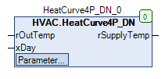

HeatCurve4P_DN (FB)¶
FUNCTION_BLOCK HeatCurve4P_DN
Short Description¶
Heating curve with four outdoor temperature points and two characteristic curves (night, day).
Portrayal¶

Interfaces¶
Inputs¶
Name Datatype
Range
Init-Value
Function
rOutTemp REAL -50.0 ... +50.0 °C 0 Outdoor temperature for calculating the characteristic curves
xDay BOOL
FALSE: Night operation
TRUE: Day operation
Outputs¶
Name Datatype
Range
Init-Value
Function
rSupplyTemp REAL 0.0 °C Supply setpoint temperature of the active characteristic curve
Setpoints / Parameters¶
Name Datatype
Range
Init-Value
Function
eManModeN eManNum eManNum.Auto Operating mode for the supply setpoint temperature rSupplyTemp.
rManValue REAL 0.0 °C Manual value for the eManNum.Man operating mode
rSupplyTempMin REAL 20.0 °C Absolute minimum supply setpoint temperature
rSupplyTempMax REAL 70.0 °C Absolute maximum supply setpoint temperature
rTo1 REAL -15.0 °C Outdoor temperature for point 1
rW1Day REAL 70.0 °C Supply setpoint temperature for outdoor temperature point 1 - Daytime characteristic curve
rW1Night REAL 65.0 °C Supply setpoint temperature for outdoor temperature point 1 - Night characteristic curve
rTo2 REAL -5.0 °C Outdoor temperature for point 2
rW2Day REAL 60.0 °C Supply setpoint temperature for outdoor temperature point 2 - Daytime characteristic curve
rW2Night REAL 55.0 °C Supply setpoint temperature for outdoor temperature point 2 - Night-time characteristic curve
rTo3 REAL 5.0 °C Outdoor temperature for point 3
rW3Day REAL 50.0 °C Supply setpoint temperature for outdoor temperature point 3 - Daytime characteristic curve
rW3Night REAL 45.0 °C Supply setpoint temperature for outdoor temperature point 3 - Night-time characteristic curve
rTo4 REAL 15.0 °C Outdoor temperature for point 4
rW4Day REAL 40.0 °C Supply setpoint temperature for outdoor temperature point 4 - Daytime characteristic curve
rW4Night REAL 35.0 °C Supply setpoint temperature for outdoor temperature point 4 - Night-time characteristic curve
rButtonJump REAL 1.0 °C Function not yet implemented.
rSupplyTempMaxScale REAL 90.0 °C Maximum temperature for scaling the Y-axis (VISU)
rBorderDistance REAL 3.0 °C Edge distance to the edge right/left in degrees Celsius for the X-axis (VISU).
Functional Description¶
Limitation
Visualization¶
Information¶
Element Authors
Date
Version Notes
Programming
Adam Bartod, Lukas Pfänder 04.2016 1.0 Initial version
Test Alexander Halter 05.2016 1.0 Initial version
Documentation
Jochen Reu 10.2017 1.0 Initial version
Revision Lukas Pfänder 11.2017 0.1.3.0 Documentation
Codesys¶
- InOut:
Scope Name Type Initial Comment Input rOutTemp REAL 0 Outdoor temperature for calculating the characteristic curves
xDay BOOL Operating mode (FALSE = night operation / TRUE = day operation)
rBorderDistance REAL 3 Edge distance to the edge right/left in degrees Celsius for the X-axis (VISU).
rSupplyTempMaxScale REAL 90 Maximum temperature for scaling the Y-axis (VISU) - Slider only shown at 90°C!
rButtonJump REAL 1 Function not yet implemented.
rW4Night REAL 35 Supply setpoint temperature for outdoor temperature point 4 - Night-time characteristic curve
rW4Day REAL 40 Supply setpoint temperature for outdoor temperature point 4 - Daytime characteristic curve
rTo4 REAL 15 Outdoor temperature for point 4
rW3Night REAL 45 Supply setpoint temperature for outdoor temperature point 3 - Night-time characteristic curve
rW3Day REAL 50 Supply setpoint temperature for outdoor temperature point 3 - Daytime characteristic curve
rTo3 REAL 5 Outdoor temperature for point 3
rW2Night REAL 55 Supply setpoint temperature for outdoor temperature point 2 - Night-time characteristic curve
rW2Day REAL 60 Supply setpoint temperature for outdoor temperature point 2 - Daytime characteristic curve
rTo2 REAL -5 Outdoor temperature for point 2
rW1Night REAL 65 Supply setpoint temperature for outdoor temperature point 1 - Night characteristic curve
rW1Day REAL 70 Supply setpoint temperature for outdoor temperature point 1 - Daytime characteristic curve
rTo1 REAL -15 Outdoor temperature for point 1
rSupplyTempMax REAL 70 Absolute maximum supply setpoint temperature
rSupplyTempMin REAL 20 Absolute minimum supply setpoint temperature
rManValue REAL 0 Manual value for the eManNum.Man operating mode
eManModeN eManNum eManNum.Auto Operating mode for the supply setpoint temperature rSupplyTemp.
Output rSupplyTemp REAL 0 Supply setpoint temperature of the active characteristic curve